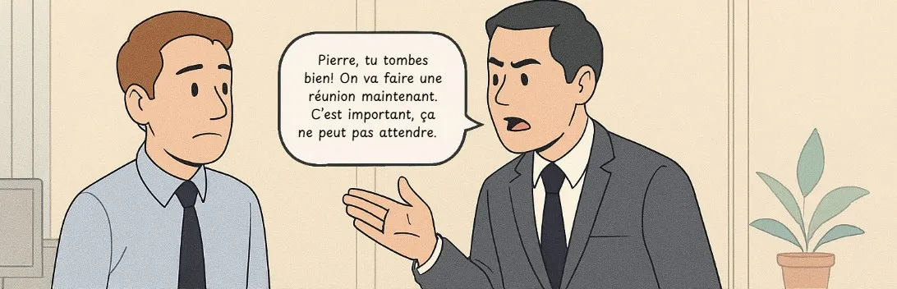
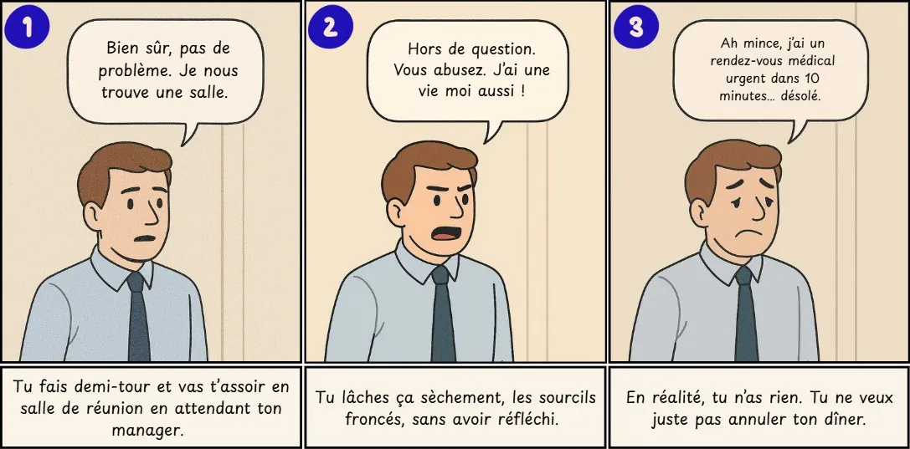
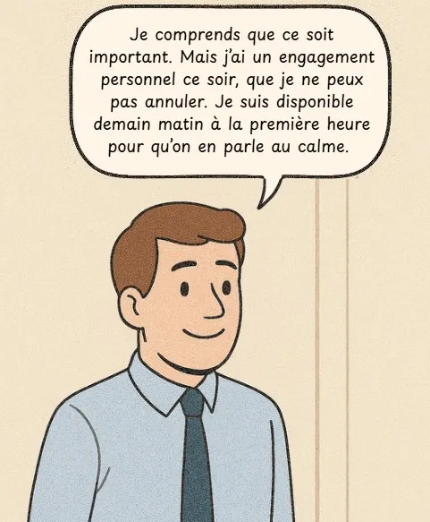

Assertivité, l'égoïsme moderne ?
Quelques éléments pour mieux comprendre cette posture essentielle à la prise de parole en public.
Il est 18h30. Tu ranges tes affaires et te prépare à partir quand soudain...
ton manager t’interpelle, sur un ton rapide et oppressant :

Tu restes figé quelques secondes. Ce soir, tu as un dîner en amoureux prévu depuis des semaines. Tu as réservé le restaurant, ton partenaire t’attend, et tu n’as pas envie d’annuler une fois de plus pour le travail.
Plusieurs réponses te traversent alors l’esprit...

👉 C’est une réponse de soumission. Tu renonces à ta soirée pour ne pas contrarier ton manager, pour rester "professionnel". Mais tu rentres tard, frustré, et tu sens que ce dîner raté t’éloigne un peu plus de ta vie personnelle. Tu t’en veux. Et tu en veux à l’autre, même s’il ne le sait pas.
👉 C’est une réponse agressive. Tu poses une limite, mais avec hostilité. Tu risques de créer un conflit inutile, de briser la communication et de te mettre en porte-à-faux dans l’équipe. Même si ton refus est justifié, la forme nuit à ta crédibilité.
👉 C’est une réponse manipulatrice. Tu inventes un mensonge pour éviter la confrontation. C’est typique de la manipulation : atteindre son objectif sans l’assumer, en évitant le malaise immédiat. Mais si la vérité éclate, ou que cette posture devient un réflexe, tu fragilises la relation de confiance et deviens illisible.
Et pourtant, il existe une autre voie. Plus exigeante, mais aussi plus respectueuse : l’assertivité.
Selon les psychologues Randy Paterson et Manuel J. Smith, l’assertivité est la capacité à exprimer ce que l’on pense, ressent ou souhaite de manière directe, honnête et respectueuse, sans céder à la peur du rejet ou du conflit. Ce n’est ni de la soumission, ni de l’agressivité, ni de la manipulation. C’est une forme de clarté relationnelle.

👉 C’est une réponse assertive. Tu dis non sans te justifier à l’excès, sans attaquer, sans mentir. Tu assumes ton cadre tout en respectant la demande. Tu montres que tu sais dire non sans fermer le dialogue. Et tu protèges ce qui compte pour toi, sans agresser ni fuir.
Que ce soit dans la sphère personnelle ou professionnelle, cette posture est encore mal comprise. On confond trop souvent l’assertivité avec de l’égoïsme, surtout quand elle prend la forme d’un refus. Mais poser une limite n’est pas rejeter l’autre. C’est se respecter pour pouvoir respecter l’autre aussi.
Alors, l’assertivité est-elle incompatible avec l’altruisme ou le compromis ? Absolument pas. Cet article explore cette idée reçue et montre que l’assertivité, loin d’être une fuite ou une dureté, est une compétence relationnelle profonde. Et qu’en prise de parole en public comme dans la vie d’équipe, elle est une condition de justesse, de cohérence… et parfois même de paix intérieure.
Clarifier les termes : assertivité VS égoïsme
L’égoïsme, en revanche, place systématiquement les besoins personnels au-dessus de ceux des autres, sans considération pour les conséquences émotionnelles ou sociales.
Une personne assertive n’impose rien, mais elle n’abdique pas non plus. Elle choisit une voie médiane entre deux extrêmes :
Passivité (renoncer à ses droits pour préserver la paix)
Agressivité (écraser les droits des autres pour faire valoir les siens)
Cette voie médiane est cependant complexe à mettre en œuvre, en fonction des contextes et sphères dans laquelle elle doit s’exprimer.
L’assertivité est un soin de soi, pas une arme sociale
Dans la récente vidéo Is Assertive Communication Selfish Or Self-care?, la psychothérapeute Erika Crome insiste sur un point fondamental : "Dire non n’est pas un rejet des autres, c’est un engagement envers soi". Elle ajoute que l’assertivité permet :
D’éviter la rancune qui découle des "oui" prononcés par culpabilité
D’établir des relations saines, équilibrées, sans jeux de pouvoir
De prévenir le surmenage, les malentendus et le ressentiment
Ainsi, poser ses limites n’est pas un acte d’isolement, mais un acte de lucidité : reconnaître que dire "oui" à tout finit par mener à dire "non" à soi-même.
Et le sacrifice alors ? Une fausse opposition
Pourtant, l’assertivité est parfois taxée d’égoïsme déguisé. Certains y voient une manière "moderne" de dire non sans jamais faire de sacrifices. En particulier, lors de prises de parole en public, cette confusion peut nuire à la légitimité d’un orateur qui assume ses positions. Combien de fois avons déjà entendu autour de nous : "Ces gens-là ne savent plus faire de sacrifices, ils pensent qu’à eux" ; "Les jeunes générations ne savent plus ce que c’est que le renoncement"...
C’est pourtant faux à plusieurs niveaux. Les personnes assertives peuvent faire des concessions, mais de manière consciente, choisie et sans s’abandonner. Elles savent dire non quand cela dépasse leurs capacités ou leurs valeurs, mais aussi dire oui quand c’est aligné avec leurs intentions. Enfin, elles refusent la logique sacrificielle non verbalisée, non négociée, et attendue par défaut dans de nombreuses interactions sociales.
Comme le souligne Erika Crome, certaines personnes peuvent mal réagir à l’assertivité – non parce qu’elle est agressive, mais parce qu’elle brise une dynamique implicite de contrôle.
Quand quelqu’un commence à poser des limites, ceux qui profitaient de son silence ou de sa docilité se sentent brusqués. Ce n’est pas le signe d’un défaut de la personne assertive, mais le révélateur d’un déséquilibre préexistant dans la relation.
L’assertivité n’exclut pas l’altruisme, elle le structure. Elle permet de distinguer le sacrifice sain (engagement choisi) du sacrifice toxique (effacement contraint).
Dans le cadre spécifique de la prise de parole en public, cela se traduit par un orateur qui assume ses idées, mais reste à l’écoute, sans se justifier ni se sur-adapter à ce que le public voudrait entendre.
Être assertif lors d’une prise de parole, c’est :
Défendre un point de vue avec assurance sans dominer
Créer un espace de dialogue, pas de confrontation
Être cohérent entre ce qu’on dit et ce qu’on est
La communication assertive permet notamment :
Une meilleure gestion du trac, car on parle en alignement avec ses convictions
Une plus grande efficacité persuasive, car le public perçoit l’orateur comme sûr, mais respectueux
Un gain de crédibilité, car l’assertivité porte une éthique de la parole vraie
Parmi les techniques simples pour appliquer l’assertivité dans tes interventions publiques ou conversations sensibles, on peut notamment citer les suivantes :
Répéter calmement une limite ("Je ne suis pas disponible ce week-end") sans s’énerver
Le message en “JE” : "Je ressens que..." ; "J’ai besoin de..." pour éviter l’accusation
L’accord partiel : reconnaître un point vrai sans renoncer ("Tu as raison sur ce point, mais cela ne change pas ma décision")
Conclusion
L’assertivité n’est pas une stratégie d’évitement ni une posture égocentrique. C’est une pratique relationnelle responsable, fondée sur la conscience de soi, le respect des autres et la clarté dans l’expression.
Dans le cadre de la prise de parole en public, c’est un outil essentiel qui donne du poids à tes mots et de la cohérence à ta posture.